ZynAddSubFX user interface and more..
The synthesizer has three types of parameters:
- Master settings/parameters contains all parameters (including effects, instruments)
- Instrument parameters contains ADnote/SUBnote parameters for a part
- Scale settings contains the settings of scales(yep! it is microtonal synth) and few other parameters related to tunings
0a) Envelopes
0b) Filters (Formant)
1) The Main Window
2) The Scale Settings
3) ADsynth/ADnote settings
4) ADsynth voice parameters
5) ADsynth Oscillator Editor
6) Voice List
7) SUBsynth(SUBnote) Parameters
8) Effects
9) Resonance
10) Instrument banks
11) Virtual keyboard
12) Configuration window (settings)
13) Instrument kit window
14) Panel window(mixer)
0a) Envelope window
The envelopes are parts that controls a parameter(frequencies) from
the sounds.
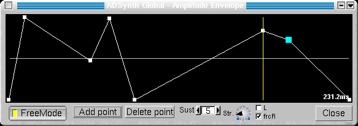
- Freemode - Enable the Envelope's Free Mode. If the envelope has the freemode enabled, it alows you to edit directly the envelope's graph. Select a point from the graph and move it. Notice that ONLY THE LINE BEFORE THE ENVELOPE'S CURRENTLY EDITED POINT changes it's duration. If a point is being dragged, the text from right, shows you the duration of the line before it. Otherwise, the text shows the envelope's total duration.
If the envelope hasn't the freemode enabled, it doesn't allow to move the points; the envelope window is usefull to see what happens if you chant the ADSR settings.
- Add Point - add a point after the current point
- Delete Point - delete the current point
- Sust - set the sustain point. If the point is 0, the sustain is disabled
- Str.- Envelope Stretch
- L - if the envelope is Amplitude Envelope, it makes the envelope Linear, otherwise, it's logarithmic (dB)
- frcR - forces the release. When the key is released, the envelope's position jumps directly to the point after the release point. If the release is disabled, on the key release, the evelope position jumps to the last point.
This window let's you to change most of the formant
filter's parameters.
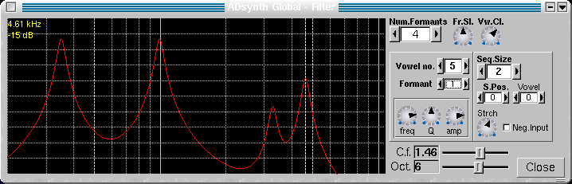
- Num.Formants - how many formants are used
- Fr.Sl. - formant slowness - this parameters prevents too fast morphing between vowels
- Vw.Cl. - wovel "clearness" - how much the vowels are kept "clear"; ie. how much the "mixed" vowels are avoided
- C.f. - the center frequency of the graph
- Oct.- how many octaves are in the graph- Vowels parameters
- Vowel no - the number of the current vowel- Sequence Parameters
- Formant - the current formant
- freq - the frequency of the current formant
- Q - the Q (bandwidth) of the current formant
- amp - amplitude of the current formant
The sequence represents what vowel is choosed to sound according to the input from the filter envelopes and LFOs.- Seq Size - how many vowels are in the sequence
- S.Pos - the curent position of the sequence
- Vowel - the vowel from the current position
- Strtch - how the sequence is stretch
- Neg Input - if the sequence is reversed
- Record - Choose a file for recording to. After you'll choose a file, the "Rec" button will be activated, and you can press it to start recording. Press "Stop" button to stop recording and close the file or "Pause" to stop recording, but without closing the file (this allows you press again "Rec" button, to continue the recording). Please do not switch windows/tasks while recording, because you may ecounter audio dropouts. The file recorded is WAV file and the recording starts only when a midi note on message is received.
- M.Vol - Master Volume
- Master Key Shift - is the keyshift(transpose) that applies to all parts
- F.Det - global fine detune (-64..63 cents)
- R.D. - reset the global fine detune to 0
- Panel window - Shows the mixer panel window
- Scales - Scale Settings
- Panic! - stops imediately any sounds, including the effects
- Vk - shows the virtual keyboard
- System Effects/ Insertion Effects - Effects settings
- Part - show and set current part.- Enabled - This enable the part. If the Part is disabled it doesn't take the CPU time.- The VU-Meter - click on it to reset it
- Volume - Part Volume
- Vel.Sns and Vel. Off. - Velocity Sensing and Offset
- PartFX - Open the part's (instrument) own effects window
- the name of the instrument: - click left button to open the Bank window
- click right button to change the name of the current instrument
- KeyShift - Keyshift of the part.
- Chn.Rcv. - From what Midi channel receives the midi messages
- AllNotesOff - turn all part's notes off
- Note On - if the part receives Note on messages. Please take attention that it is different than Enabled setting, because it takes CPU time, and the unfinished notes continues to play if you'll disable it.
- ADsyn/SUBsyn - activate or deactivate ADsynth/SUBsynth
- ADs edit/SUBs edit - edit ADsynth/SUBsynth parameters
- Instr.kit items edit - open the instrument's kit's items window (used for layered instruments/drum kits)
- To Sys Efx. set how much of the part output is routed to System effects
If you change tha current part, all part's instrument windows will be closed
- Min.k and Max.k controls the minimum/maximum NoteOn for the Part
- m/R/M - set the last presed note to the minimum(m)/maximum(M) or reset min/max defaults(R)
- Poly - set the mode (polyhonic/monophonic)
- Portamento - Enable the portamento (you can set its duration and other parameters by opening Controllers window)
- K.lmt - limit the number of keys that plays same time (first note priority), 0 is unlimited
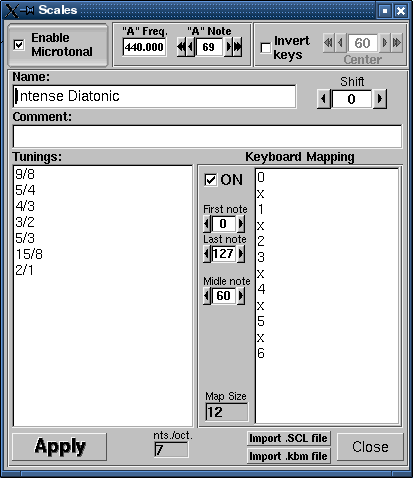
This controls the microtonal capabilities of the ZynAddSubFX and some other settings related to tunning.
- Enable Microtonal - if you'll disable this the synth will use Equal Temperament 12 notes/octave. Otherwise you can input any scale you desire.
- "A" freq - set the frequency of the "A" key. The standard is 440.0 Hz
- "A" note - set the midi note number of the "A" key
- Invert keys - If you'll enable this, the keyboard will be turned upside-down. It was to cute ideea to not implement it.
- Center - set the center of inversion of keys. If the center is 60, the note 59 will become 61, 58 will become 62, 61 will become 59 and so on.
- Name - the name of the scale
- Comment - Comments or description of the scale
- Shift - shift the scale. If the scale is tuned to A you can easily tune it to another key.
- Tunnings - here you can input your scale by entering all tunnings for one octave.
You can enter the tunnings in two ways:- as a the number of cents (1200 cents=1 octave) as a float number like "100.0", "123.234"The last entry represents one octave. All other notes are deduced from theese settings.
- as a proportion like "2/1" which represents one octave, "3/2" a perfect fifth, "5734/6561".
"2/1" is equal to "1200.0" cents.- Keyboard Mapping - you can set the midi keyboard to scale degree mapping. This is used if the scale has more or less than 12 notes/octave.
- You can enable the mapping by pressing "ON" chekbox- "Import .SCL file" and "Import .kbm file" imports Scala files. Scala is a powerful software for experimentation with musical tunings (just intonation scales, microtonal,...etc.). From it's home page you can download more than 2800 scales which you can import directly in ZynAddSubFX.
- The midi keys below "First note" and above "Last note" are ignored
- Middle note represents the note where formal octave starts
- The input - you enter the mappings here:- numbers, represent the order(degree) entered on Tunings Input (first is 0). This must be less than the number of notes/octave. If you want that a key to not to be mapped, you enter "x" instead of a number.
You can edit the parameters that's applies to all voices of ADsynth.
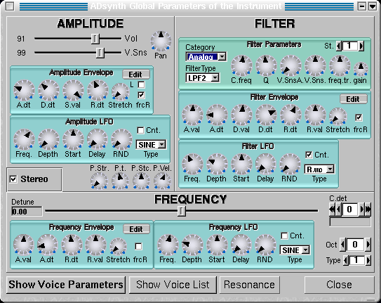
Vol. - is the volume of ADsynth
Pan. - Panning, leftmost is random
V.Sns. - Velocity Sensing
Stereo Enabled - If it turned off all voices will have the panning disabledP.Str. - Punch effect strength
P.t. - Punch effect duration (from 0.1 ms to 100 ms on A note- 440Hz)
P.Stc. - Punch effect stretch according to frequency. On lower notes the punch effect lasts longer.
P.Vel. - Punch effect velocity sensingCenterFreq. - Filter Center Frequency
Category - Filter category: Analog/Formant
Q - is the ressonance or bandwidth. Some filter types ignores this.
St. - how many additional times the filter will be applied (in order to do very steep rollof - eg. 48 dB/octave)
V.Sns.A. - the amplitude of the velocity sensing
freq.tr - filter frequency trackingDetune. - is the detune of all voices
C.detune - is the coarse detune of all voices
Oct. - Octave Shift
Type - you can set how "Detune" and "C.detune" behaivourShow Voice Parameters - shows the parameters of current voice
Show Voice List - shows a list of some important parameters of all voices
Close - close the window
On - turn voice On/Off
Delay - delay before the voice starts
R. - Enable/Disable the resonance to the voice
Vol - Voice Volume
Minus - if the voice's volume is negative
V.Sns. - Velocity Sensing
Enable - enable LFOs or envelopesBypass Global Filter - If the voice signal bypasses the global filter
Category - Filter category: Analog/Formant/SVF
CenterFreq - filter center frequency
Q - Ressonance or bandwidth
St. - how many additional times the filter will be applied (in order to do very steep rollof - eg. 48 dB/octave)
freq.tr - filter frequency trackingDetune. - is the detune of the voice
C.detune - is the coarse detune of the voice
Oct. - Octave Shift
Type - you can set how "Detune" and "C.detune" behaivour; 0 is for default (used in ADnote Global Parameters)
440Hz - make the basefrequency fixed to 440Hz (you can adjust it with detune settings)Phase - Phase of the oscillator
Sound/Noise choise - select the mode of the oscillator (Sound/White noise)
Ext. Oscil. - Uses the oscillator of another voice. -1 is for internal oscillator. The parameters must be lower than the voice index, you can't use the oscillator from a voice with a bigger index (you can't use the oscillator of voice 8 for voice 4). This is very used because if you'll use many voices with same oscillator settings, you can use only one oscillator and put other voices to use this; if you'll change a parameter of the oscillator, all voices will update this.Type. - select the type of the modullator (Off, Morph, Ring Modullation, Phase Modullation,etc.)
Ext. Mod - use another voice as modullator instead of internal voice's modullator. You can make a modullation "stack". The voice's modullator is disabled.
F.Damp - how the modullator intensity is lowered according to lower/higher note frequencies.
Ext. - Uses the modulator's oscillator of another voice. It behaves like "Ext. Oscil" except it works on modullator. Please notice the difference between this parameter and Ext. Mod.Copy/Paste - Copy/paste to/from the clipboard
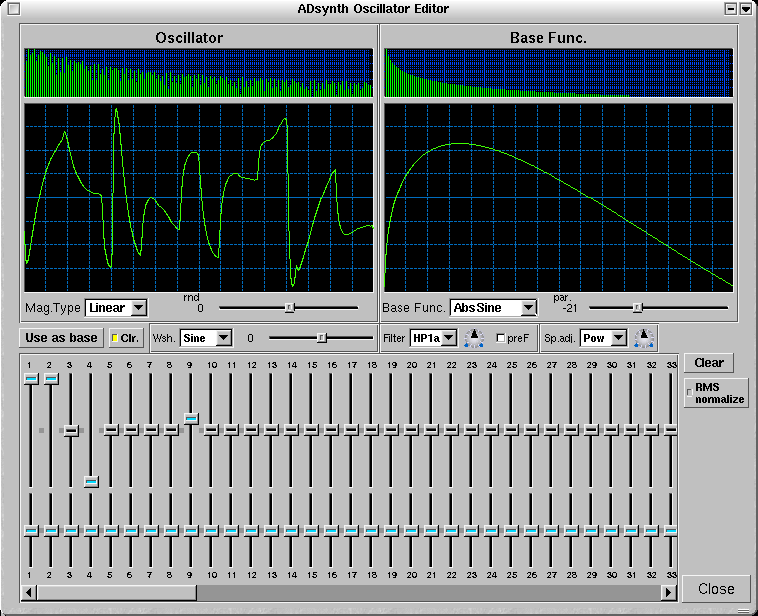
This allow you to make unlimited number of oscillators.
Mag. Type - set how magnitudes from the user interface behaves (Linear/ -40dB/...)
rnd - Set the randomness of the oscillator output. There are 2 types of randomnesses, first is group randomness(the oscillator starts at random position) is from -64(max) to -1 (min) and each harmonic (the oscillator is phased distosioned) is from 1(min) to 63 (max). 0 is no randomness. You should use this parameter for making warm sounds like analogue synthesizers.
Base function - Set what function use as base function. You can use any of base function as harmonics.
Par. - change the parameter of the base function.
Use as base - convert the oscillator ouput to a base function. If you'll change the Base function or it's parameter, you'll erase the converted base function.
Clr. - clear the settings and make the oscil to be equal to base function. If this is cleared you can pus "Use as base" button to make multiple conversions to base functions.
W.sh. - Wave shaping function that applies to oscillator. It has one parameter that fune tune the waveshaping function.
Filter - Set the type of the harmonic filter
- the knob in the right sets the filter parameter (frequency)
- preF - set the order of doing the filter and waveshaper (unchecked to filtering after waveshaping, checked to waveshape after filtering)
Sp. Adj - Adust the spectrum of the waveform
RMS normalize - enables the RMS normalisation method (recomanded); this keeps the same loudeness regardless the harmonic contentBelow are the hamonics and their phases. You can use them to add to oscillator harmonics that has the waveform of the base function. Increasing the number of harmonics has vitually no effect on CPU usage.
Right click to set a harmonic/phase to a the default value.
Clear - clears the harmonics settings.
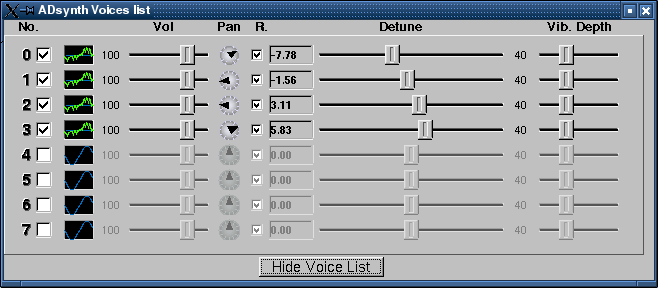
With this you can set most important parameters of the voices.
Vol. - set the Volume of the voice
Pan - Panning
Detune - Fine detune of voices
Vib. Depth - the depth of Frequency LFO. It is very used because with the detune settings you can make very good sounding instruments.
R. - enable/disable the resonance effect to a voice
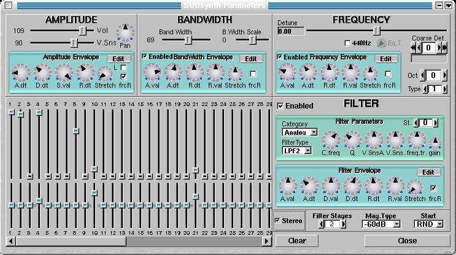
Vol. - The volume of SUBsynth
Pan. - Panning
V.Sns. - Velocity SensingBand Width - the bandwidth of each harmonic
B.WidthScale - how the bandwidth of each harmonic is increased according to the frequency. The default (0) increase the bandwidth lineary acorrding to the frequency.Detune. - is the fine detune
Category - Filter category: Analog/Formant/SVF
C.detune - is the coarse detune
Oct. - Octave Shift
Type - you can set how "Detune" and "C.detune" behaivour
440Hz - make the basefrequency fixed to 440Hz (you can adjust it with detune settings)The harmonics settings controls the harmonic intensities/relative bandwidth. Up is to increase the relative bandwidth.
Please notice that if you increase the number of harmonics, the CPU usage increases. Right click to set the parameters to default values.Stereo - make the instrument stereo. The CPU usage goes up about 2 times.
Filter stages - How many times apply the filter to white noise. This parameter affect the CPU usage.
freq.tr - filter frequency tracking
Mag. Type - What represents the magnitudes settings (Lineat/dBs)
Start - How to start the filters.
Clear - Clear the hermonics settings
The insertion effects applies to one part or to master out. You may
use more than one insertion effects for one part or master out. If you'll
do so the effect with smaller indexes will apply first(eg. first will be
applied the insertion effect no.0, than no.1, ...). If the part selected
for insertion effect is "-1" than, the effect will be disabled; if the
part will be "-2" the effect will be applied to Master Out.
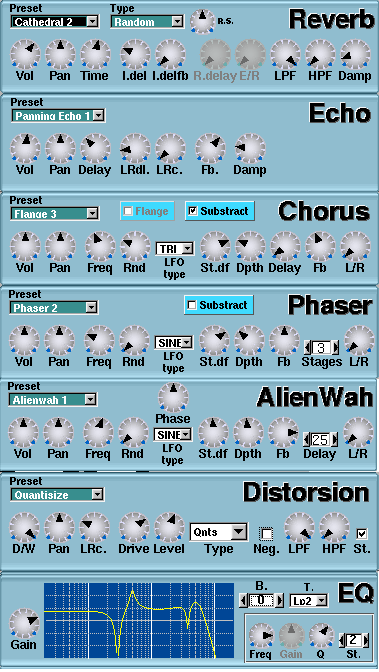
Effects parameters:
- Vol - effect volume
(how much of the effect is sent to audio output)
- D/W - Dry/Wet
mix. "Dry" means unprocessed signal and "wet" means processed signal.
- Pan - effect panning
Reverb
- Time - Duration
of late reverb
- I.del - Initial
delay
- I.delfb -
Initial delay feedback (not recomanded to use to low initial delays)
- LPF, HPF - LowPass
and HighPass filters
- Damp - how high
frequencies are damped during the reverberation
Echo
- Delay - The delay
of echo
- LRdl. - The delay
between left/right channels
- LRc. - the
"crossing" between left/right channels
- Fb. - feedback
- Damp - how high
frequencies are damped
Chorus
- Freq. - LFO frequency
- Rnd. - LFO randomness
- LFO type
- set the LFO shape
- St.df. - the phase
difference between LFO for left/right channels
- Dpth - LFO depth
- Delay - delay for
chorus, if you'll use low delays and LFO depths, will result a flange
effect
- Fb. - Feedback
- L/R - how the left/right
channels are routed to output, leftmost=left to left and right to right,
middle=left+right to mono, and rightmost=left to right, and right to left
- Substract - the
output is inversed
Phaser
- Freq. - LFO frequency
- Rnd. - LFO randomness
- LFO type
- set the LFO shape
- St.df. - the phase
difference between LFO for left/right channels
- Dpth - LFO depth
- Stages - how many
times the phase is shifted
- Fb. - Feedback
- L/R - how the left/right
channels are routed to output, leftmost=left to left and right to right,
middle=left+right to mono, and rightmost=left to right, and right to left
- Substract - the
output is inversed
AlienWah
AlienWah is a nice effect done by me. It ressembles
a bit with vocal morpher or wahwah, but is more strange. That's why I called
"alienwah". The effect is a feedback delay with complex numbers.
- Freq. - LFO frequency
- Rnd. - LFO randomness
- LFO type
- set the LFO shape
- St.df. - the phase
difference between LFO for left/right channels
- Dpth - LFO depth
- Delay - how big
is the delay before the feedback.
- Fb. - Feedback
- L/R - how the left/right
channels are routed to output, leftmost=left to left and right to right,
middle=left+right to mono, and rightmost=left to right, and right to left
- Substract - the
output is inversed
- Phase - the phase
of alienwah
Distorsion
- Drive - set the amount of distorsion
- Level - amplify or reduces the signal
after distorsion
- Type - sets what function does the
distorsion (like arctangent, sine)
- Neg. - negates the amplitude (invert
the signal)
- LPF - Low Pass Filter
- HPF - High Pass Filter
- St. - sets the distorsion mode (stereo
or mono, checked is stereo)
EQ
EQ is a parametric equalizer. On the equalizer graph there
are 3 white vertical bars for 100Hz, 1kHz, 10kHz.
- Gain - Amplifies or reduce the signal that
passes thru EQ.
- B. - Set the current frequency band (or
filter)
For each band:
- T. - Set the type of the filter
- Freq - the frequency of the filter
- Gain - the gain of the filter
- Q - the Q (resonance, or bandwidth) of
the filter
- St. - how many additional times the
filter will be applied (in order to do very steep rollof - eg. 48 dB/octave)
The resonance effect acts as a "ressonance box" or a filter with arbitrary frequency response. This produces very realistic sounds.
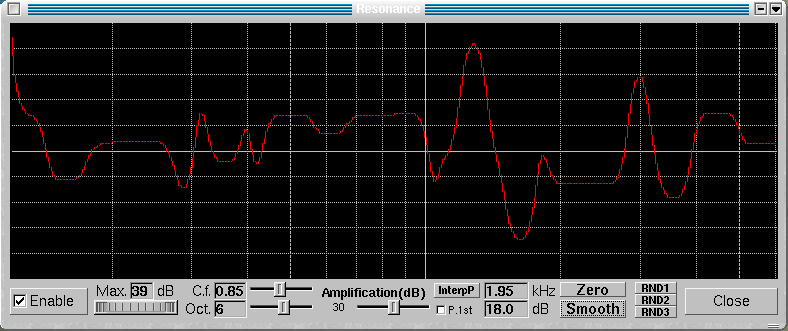
Resonance parameters:
- the graph lets you to draw it in "freehand"
mode
- Enable - Turn the Resonance on.
- Max - How strong is the resonance: lower
values has little effect. Use the roller below to set it.
- C.f - the center frequency of the graph
- Oct. - How many octaves the graph represents
- Amplification - how the output signel is
amplified
- Zero - clears the graph
- Smooth - smooth the graph
- P.1st - don't allow to the fist harmonic
(fundamental freq.) to be damped
- InterpP - interpolate the peaks. This alows
you to make very easy resonance functions. First, clear the graph using
the "Zero" buton. Press the left button on some graph's posistions. Press
the "InterpP" button. It will interpolate automatically between the positions
that you pointed (or drawn). Also you can clear a part of the graph by
dragging with the right mouse button. In fact, the "interpP" button interpolates
between non-zero values. If you press the "InterpP" with right mouse button,
the interpolation will be linear, and if you will use the left button,
the interpolation will be smooth.
- RND1,RND2,RND3 - makes random resonance
functions
- Close - closes the window
The cursor location is shown below the graph (the frequency - kHz and amplitude - dB).
The instruments can be stored in banks. Theese are loaded/saved automatically by the program, you don't have to worry about saving the banks before the program exits. On the program starts, the last used bank is loaded. A single bank can store up to 128 instruments.
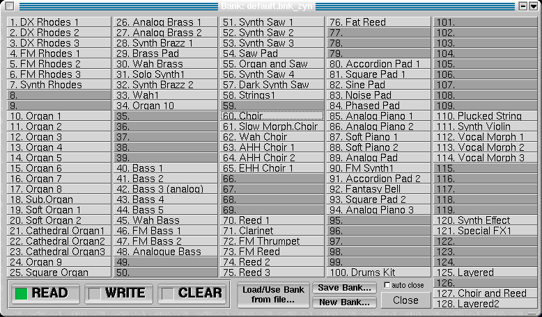
- the bank has 3 modes:
- READ - the instrument is loaded from the bank to the current part.
- WRITE - the instrument is written to bank
- CLEAR - the instrument from the bank is cleared (removed)
- pressing left mousebutton on a slot reads/writes/clears
the instrument from/to it (according to the current mode)
- pressing right mousebutton on a slot changes
it's name
- "Load/Use Bank from file..." loads a bank
from the file and makes it current bank
- "Save Bank..." save the bank to a file
and makes the saved file current bank. It is usefull only when you
want to copy a bank to a file. Please notice that the current bank is automatically
saved when the program exits or when the bank is changed and you don't
have to save the changes of a bank.
- "New Bank..." Makes a new bank.
- auto close - Close the window after the
instrument was loaded
- Close - closes the window
If the bankfile is readonly, it is shown as "LOCKED" and the
changing it is not allowed. If you still want to make changes to it, click
on "Save Bank..." to save a copy and do the changes on that copy.
The virtual keyboard lets you to play notes using the keyboard/mouse.
There is no midi requirement.
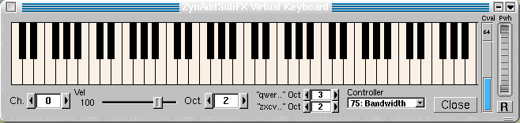
Using the keyboard: the keyboard is splitted in
two "octaves"(in fact is more than 1 octave). It may happens that the keys
will not trigger any noteon. This is because another widget than the keyboard
itself is selected. In order to continue playing using the keyboard, click
with the mouse on some keys from the virtual keyboard.
Using the mouse: you can use the mouse too, to play
. If you press the shift key while pressing the mouse button, the keys
will be not relased when the mouse button is released.
If you press the "Panic" button from the ZynAddSubFX
main window, all keys will be released.
Functions:
Ch. - set the midi channel
Vel - set the noteon velocities
Oct - transpose all the virtual keyboard
"qwer..." Oct - transpose the upper keys
("qwert"); the range of theese keys is from C-4 to A-5 (replace the '5'
with the octave)
"zxcvb..." Oct - transpose the lower keys
("zxcvb"); the range of theese keys is from C-3 to E-4 (replace the '4'
with the octave)
Controller - set what controller to be changed
according to Cval
Cval - change the controller value (please
notice that the Cval might not reflect what is the ZynAddSubFX internal
value of the controller; this happens when you change the controller)
Pwh - Pitch Wheel, press the "R" button
to reset it
Close - closes the window
Using this window, you can configure some important settings of ZynAddSubFX.
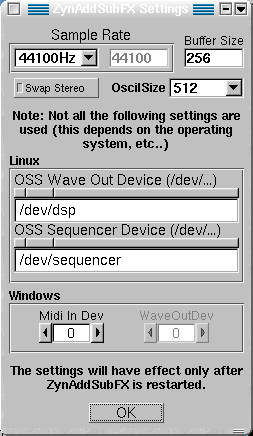
Note: All theese settings take effect only after the ZynAddSubFX is restarted.
Sample Rate - set the quality of the sound, higher is better,
but it consumes more CPU time. You can set from a list, or if you want
a samplerate that is not on the list, select "Custom" and change the value
from the right. Default is 44100.
Buffer Size - set the granularity of the sound. Default is 256
samples. To find out the internal delay in milliseconds, divide the Buffer
Size value, by Sample Rate and multiply the result by 1000 (eg: 256/44100*1000=5.8
ms)
OscilSize - set the number of the points of the ADsynth oscillator.
The bigger is better, but it takes more CPU time on start of any note.
Default is 512.
Swap Stereo - if the pan positions are reversed, check or uncheck
this button
Some of the folowing settings might be ignored. For example the "OSS Sequencer Device" is ignored, if the ALSA is used for midi in (set on the compile time), or Linux settings on Windows systems.
Linux - OSS Wave Out Device - set the audioout device
(soundcard). Default is "/dev/dsp"
- OSS Sequencer
Device - set the sequencer (midi in) device. Default is "/dev/sequencer"
Windows - Midi In Dev - set the midi in device
- WaveOutDev - unused, yet
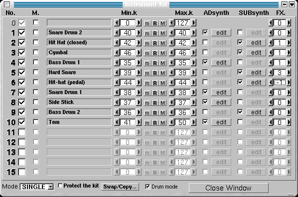
With this you can make drum kits, layered instruments, or you can combine
more instruments into one.
Kit Mode - enable the kit mode
Protect the kit - when loading a instrument,
only the item 0 will be changed, other items will be leaved in place. This
alows you to combine more instruments. If you want to add more instruments
to the kit, you have to copy the item 0 to another item, because the item
0 will be replaced. If you load master settings or if you clear the instrumet/master
setting, the kit is cleared
Swap/Copy - swaps two items or copy a item
to other item.
Kit's items are used to make complex instrument.
The item 0 is a special type: it cannot be disabled (but it can be muted),
to edit it you have to use "ADs edit" or "SUBs edit" from the part window.
No - number of the
item
M - mute an
item of the kit
Min.k - minimum key
of the kit's item
m/R/M - set the last
played note to the minimum(m)/maximum(M) or reset min/max defaults(R)
Max.k - maximum key
of the kit's item
ADsynth - enable
and edit ADsynth module of the kit's item
SUBsynth - enable
and edit SUBsynth module of the kit's item
FX. - choose the
Part Effect (PartFX) to process this item (-1 means that is unprocessed).
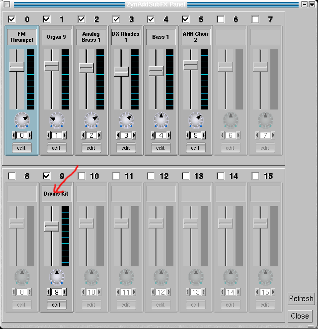
Parameters and buttons
Enable/Disable the part - the checkboxes enables/disable
the part
Instrument name - click on this box to change the
instrument
The volume bar and the panning dialbutton- you can
change the volume and the pan of the part
The counter below the panning dialbutton is the
midi channel that is assigned to the part.
Edit - make the part current part.
External Programs are distributed with ZynAddSubFX, but there are not a part of it, because they can be used with any other synthesizer (or midi device). Both uses ALSA and they must be connected with acconect or alsa-patch-bay.
1) Spliter
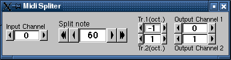
This program helps you to play to 2 instruments same time, by splitting a midi channel to other midi channels.
Input Channel - The channel which is being splitted.
Split Note - The notes below it are send to Output Channel
1, and the notes above it are sent to Output Channel 2.
Tr.1(oct) and Tr.2(oct) - transpose in octaves of output
channel 1 and 2
2) Controller
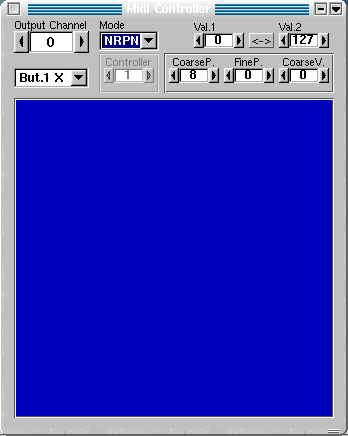
With this program you can control up to 6 controllers/NRPNs same time
with the mouse.
The program was written for mouses with 3 buttons, so "But.1 X" means
X movement (left-right) of buton 1 (left ) of the mouse. Right mouse button
is "But.3" and middle "But.2".
"Val.1" and "Val.2" represents the leftmost/rightmost or up/down values
(depends on X/Y movement).